VOCABULARY · 主題 2000 字 UNIT 2
Personal characteristics．個人特徵
描述外表、心情、個性的形容詞，共 51 個。注意比較級的變化和 -ed／-ing 的差別。
共 51 個單字．點 🔊 聽發音

1beautifuladj.
美麗的
比較級 more beautiful
What a beautiful sunset!好美的夕陽！
2blindadj.
瞎的；失明的
the blind 盲人
The blind man walks with a guide dog.那位盲人和導盲犬一起走路。
3cuteadj.
可愛的
cuter → cutest
The puppy is so cute.那隻小狗好可愛。

4fatadj.
胖的；肥的
fatter → fattest（重複 t）
Our cat is getting fat. It eats too much.我們的貓變胖了，牠吃太多了。
5handsomeadj.
英俊的
多用來形容男生
Ken looks handsome in his new suit.Ken 穿新西裝看起來很帥。

6heavyadj.
重的
heavier → heaviest
This box is too heavy for me to carry.這個箱子太重了，我搬不動。
7oldadj.
老的；舊的
older → oldest
My grandpa is old, but he is still strong.我爺爺年紀大了，但還是很健壯。
8prettyadj.
漂亮的
prettier → prettiest
Look at the pretty flowers in the garden.看花園裡漂亮的花。
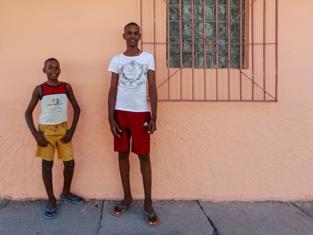
9shortadj.
矮的；短的
shorter → shortest
My little brother is short, but he runs fast.我弟弟個子矮，但跑得很快。
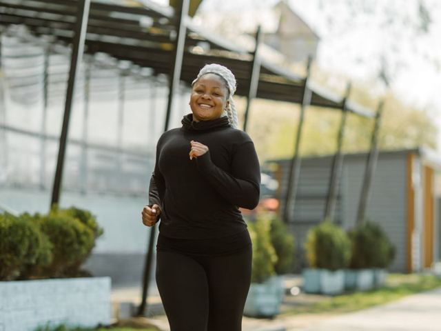
10slimadj.
苗條的
slimmer → slimmest（重複 m）
She exercises every day to stay slim.她每天運動保持苗條。
11talladj.
高的
taller → tallest
Taipei 101 is a very tall building.台北 101 是一棟很高的大樓。
12thinadj.
瘦的；薄的
thinner → thinnest（重複 n）
The book is thin, so I can read it in a day.這本書很薄，我一天就能讀完。
13uglyadj.
醜的
uglier → ugliest
In the story, the ugly duckling became a swan.故事裡，醜小鴨變成了天鵝。
14youngadj.
年輕的
younger → youngest
My aunt looks young for her age.我阿姨看起來比實際年齡年輕。

15angryadj.
生氣的
be angry with + 人
Mom was angry because I came home late.媽媽生氣了，因為我很晚回家。
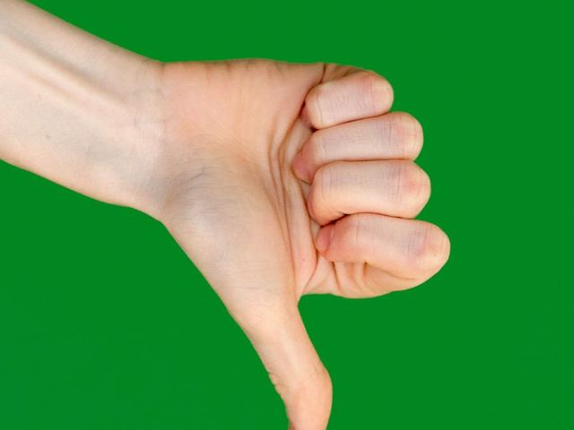
16badadj.
壞的；不好的
worse → worst（不規則）
Eating too much sugar is bad for your teeth.吃太多糖對牙齒不好。
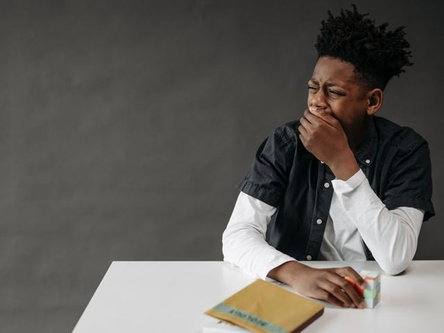
17boredadj.
感到無聊的
人感到 → -ed
I was bored, so I called my friend.我覺得無聊，所以打電話給朋友。
18boringadj.
令人無聊的
事物令人 → -ing
The movie was so boring that I fell asleep.那部電影無聊到我睡著了。

19braveadj.
勇敢的
braver → bravest
The brave firefighter saved the little girl.那位勇敢的消防員救了小女孩。
20busyadj.
忙碌的
busier → busiest
Dad is busy cooking dinner.爸爸正忙著煮晚餐。
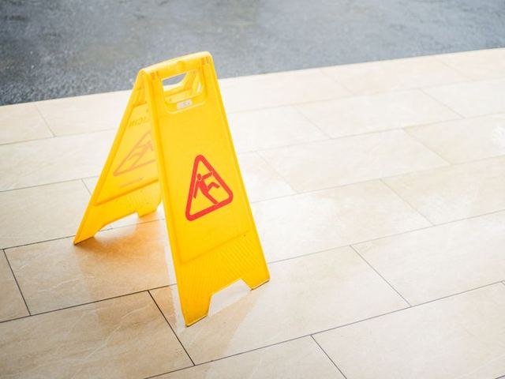
21carefuladj.
小心的；仔細的
副詞 carefully
Be careful! The floor is wet.小心！地板是濕的。
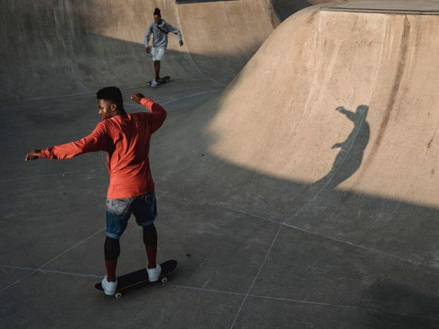
22cooladj.
涼爽的；很酷的
cooler → coolest
Your new skateboard is really cool!你的新滑板真的很酷！

23crazyadj.
瘋狂的；著迷的
be crazy about 對…著迷
My sister is crazy about K-pop.我妹妹很迷韓國流行音樂。
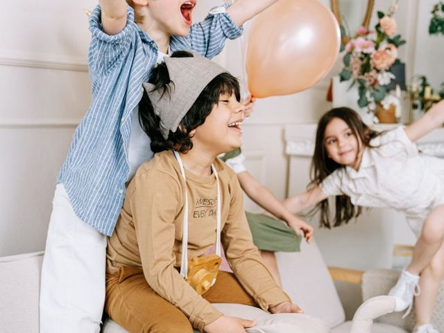
24excitedadj.
感到興奮的
人感到 → -ed
The kids are excited about the trip.孩子們對這趟旅行感到很興奮。
25excitingadj.
令人興奮的
事物令人 → -ing
The basketball game was very exciting.那場籃球賽非常刺激。
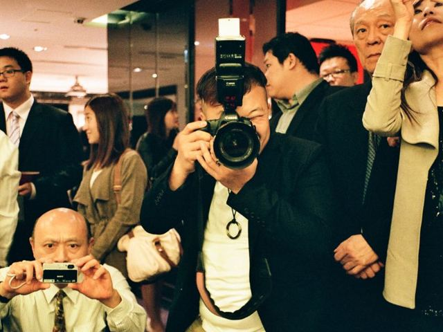
26famousadj.
著名的
be famous for 因…而有名
Tainan is famous for its snacks.台南以小吃聞名。
27friendlyadj.
友善的
-ly 結尾的形容詞
Our new neighbor is very friendly.我們的新鄰居很友善。

28funnyadj.
好笑的
funnier → funniest
He told a funny story, and we all laughed.他講了個好笑的故事，我們都笑了。

29goodadj.
好的
better → best（不規則）
Fruit is good for your health.水果對健康有益。
30happyadj.
快樂的
happier → happiest
I am happy to see you again.很高興再見到你。
31hard-workingadj.
努力的；勤奮的
= diligent
She is a hard-working student.她是個用功的學生。
32honestadj.
誠實的
h 不發音：an honest boy
An honest person always tells the truth.誠實的人總是說實話。

33interestedadj.
感興趣的
be interested in
I am interested in drawing.我對畫畫有興趣。

34kindadj.
親切的；和善的
be kind to + 人
Ms. Lin is always kind to her students.林老師對學生總是很親切。
35lazyadj.
懶惰的
lazier → laziest
Don't be lazy. Clean your room now.別偷懶，現在去整理房間。

36lonelyadj.
孤單的；寂寞的
-ly 結尾的形容詞
The old man lives alone and feels lonely.那位老先生獨居，覺得很寂寞。

37lovelyadj.
可愛的；美好的
-ly 結尾的形容詞
What a lovely day for a picnic!真是適合野餐的好天氣！
38madadj.
生氣的；瘋狂的
madder → maddest
Dad got mad when he saw the broken window.爸爸看到破窗戶就發火了。
39niceadj.
好的；友善的
nicer → nicest
It's nice of you to help me.你人真好，還幫我。
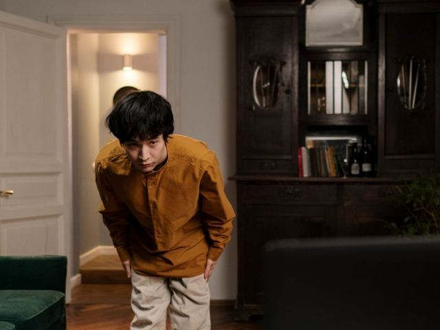
40politeadj.
有禮貌的
反義 rude 無禮的
It is polite to say "thank you."說「謝謝」是有禮貌的。
41pooradj.
貧窮的；差勁的
be poor at 不擅長
He was poor, but he never gave up.他很窮，但從不放棄。

42proudadj.
驕傲的；自豪的
be proud of 以…為傲
My parents are proud of me.我爸媽以我為傲。
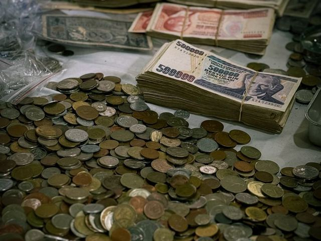
43richadj.
富有的
richer → richest
The rich man gave money to the school.那位有錢人捐錢給學校。
44sadadj.
悲傷的
sadder → saddest
I feel sad when my friends move away.朋友搬走時我很難過。
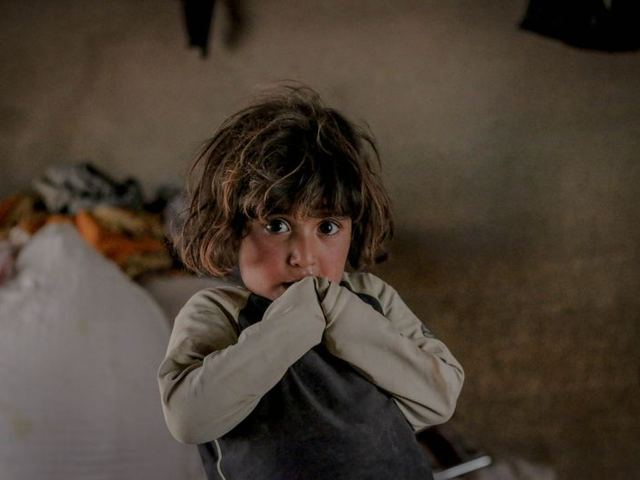
45scaredadj.
害怕的
be scared of
My little sister is scared of the dark.我妹妹怕黑。

46shyadj.
害羞的
shyer → shyest
Amy is shy, so she doesn't talk much in class.Amy 很害羞，上課不太說話。
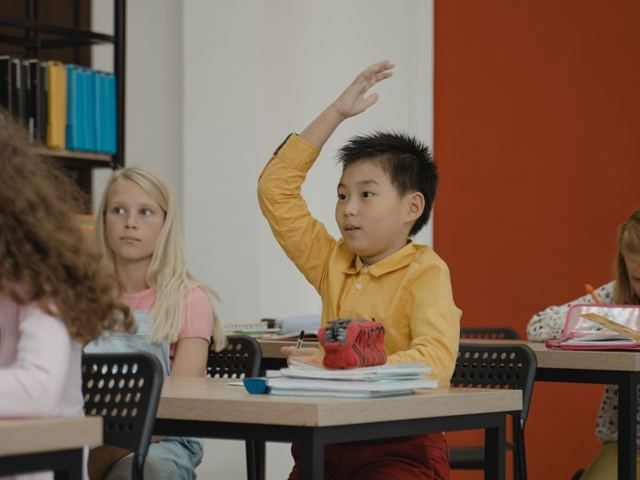
47smartadj.
聰明的
smarter → smartest
The smart dog can open the door by itself.那隻聰明的狗會自己開門。
48stupidadj.
愚蠢的
說人時不禮貌，少用
It was stupid of me to forget my key.我真蠢，竟然忘了帶鑰匙。
49successfuladj.
成功的
success（名詞）+ -ful
She became a successful writer.她成為一位成功的作家。
50unhappyadj.
不快樂的
un- + happy
He was unhappy about his test score.他對考試成績不滿意。
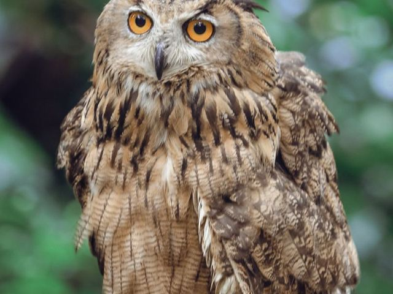
51wiseadj.
有智慧的
wiser → wisest
Grandma is wise. She always gives good advice.奶奶很有智慧，總是給好建議。
FOCUS
不規則的比較級
| 原級 | 比較級 | 最高級 |
|---|---|---|
| good | better | best |
| bad | worse | worst |
| old | older | oldest |
大部分加 -er／-est；重複字尾 fat→fatter、thin→thinner、sad→sadder；子音+y 改 i：happy→happier；多音節用 more：more beautiful。詳見文法 Unit 10。
FOCUS
-ed 和 -ing：誰的感覺？
| 人「感到」(-ed) | 事物「令人」(-ing) |
|---|---|
| bored | boring |
| excited | exciting |
| interested | interesting |
I am bored. → The movie is boring. 詳見文法 Unit 5。